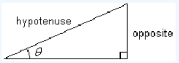

Sine of an Acute Angle
\(~~~~~~\text{sin}~ \theta = \dfrac{\text{opposite}}{\text{hypotenuse}}\)

With the Pythagorean theorem we can find one side of a right triangle if we know the other two sides. By using what we know about similar triangles, we can find the unknown sides of a right triangle if we know only one side and one of the acute angles.
In Example 2 of Section 1.2, we saw that in a 30-60-90 right triangle, the ratio of the shortest side to the hypotenuse was \(\frac{1}{2}\text{,}\) or 0.5. This ratio is the same for any two right triangles with a \(30\degree\) angle, because they are similar triangles, as shown at right.
The ratio is given a name; it is called the "sine of \(30\degree\text{.}\)" We write
\begin{equation*} \text{sin }30\degree = 0.5, \end{equation*}where sin is an abbreviation for sine. There is nothing special about \(30\degree\) angles; we can talk about the sine of any angle. The sine of an angle is the ratio of the side opposite the angle to the hypotenuse.
\(~~~~~~\text{sin}~ \theta = \dfrac{\text{opposite}}{\text{hypotenuse}}\)
Find the sine of the labeled angle in each triangle below.
Find the sine of the labeled angle in the triangle at right. Round your answer to 4 decimal places.
We must use the sides of a right triangle to calculate the sine of an angle. For example, in the triangle at right, sin \(\theta=\frac{4}{7}\text{,}\) because \(\triangle ABC\) is a right triangle. It is not true that sin \(\theta=\frac{5}{7}\text{,}\) or sin \(\theta=\frac{6}{7}\text{.}\) In this chapter, we consider only right triangles.
Mathematicians have calculated the sines of any angle we like. The values of the sine were originally collected into tables, and are available on scientific calculators. For example, let's find the sine of \(50\degree\text{.}\) First, consider some triangles, as shown below.
Do you expect the sine of \(50\degree\) to be larger or smaller than the sine of \(30\degree\text{?}\) Do you expect the sine of \(50\degree\) to be larger or smaller than 1?
Use your calculator to find the sine of \(50\degree\) by entering SIN \(50\text{.}\) (Make sure your calculator is set for degrees.) You should find that
\begin{equation*} \text{sin}~ 50\degree = 0.7660444431\text{.} \end{equation*}This is not an exact value; the sine of \(50\degree\) is an irrational number, and your calculator shows as many digits as its display will allow. (Not all sine values are as “nice” as the sine of \(30\degree\text{!}\)) Usually we round to four decimal places, so we write
\begin{equation*} \text{sin}~ 50\degree = 0.7660 \end{equation*}Note that when you press the sine key, SIN , your calculator displays
\begin{equation*} \text{sin}~ ( \end{equation*}with an open parenthesis, as the prompt to enter an angle. It is more proper to use parentheses and write sin \((50\degree)\) for “the sine of \(50\degree\text{,}\)” but we often omit the parentheses in simple trigonometric expressions.
Think of the notation sin as an operation symbol telling you to find the sine of an angle, just as the symbol \(\sqrt{~~} \) tells you to take the square root of the expression under the radical.
Use your calculator to complete the table, rounding your answers to four decimal places.
| \(\theta\) | \(~~0 \degree\) | \(~10 \degree\) | \(~20 \degree\) | \(~30 \degree\) | \(~40 \degree\) | \(~50 \degree\) | \(~60 \degree\) | \(~70 \degree\) | \(~80 \degree\) | \(~90 \degree\) |
| sin \(\theta\) | \(~~~\) | \(~~~\) | \(~~~\) | \(~~~\) | \(~~~\) | \(~~~\) | \(~~~\) | \(~~~\) | \(~~~\) | \(~~~\) |
The important thing to remember is that the sine of an angle, say \(50 \degree\text{,}\) is the same for any right triangle with a \(50 \degree\) angle, no matter what the size or orientation of the triangle.
The figure below shows three different right triangles with a \(50 \degree\) angle. Although the sides of the triangle may be bigger or smaller, the ratio \(\dfrac {\text{opposite}}{\text{hypotenuse}}\) is always the same for that angle, because the triangles are similar. This is why the sine ratio is useful.
In the next example we see how to use the sine ratio to find an unknown side in a right triangle, knowing only one other side and one angle.
Find the length of the side opposite the \(50 \degree\) angle in the triangle shown.
In the previous example, even though we showed only four places in sin \(50 \degree\text{,}\) you should not round off intermediate steps in a calculation, because the answer loses accuracy with each rounding. You can use the following keystrokes on your calculator to avoid entering a long approximation for sin \(50 \degree\text{:}\)
\begin{equation*} \text{sin}~(50)~\times 18 \end{equation*}The calculator returns \(x=13.78879998.\)
Find the length of the hypotenuse in the triangle shown.
There are two more trigonometric ratios used for calculating the sides of right triangles, depending on which of the three sides is known and which are unknown. These ratios are called the cosine and the tangent.
Suppose we'd like to find the height of a tall cliff without actually climbing it. We can measure the distance to the base of the cliff, and we can use a surveying tool called a theodolite to measure the angle between the ground and our line of sight to the top of the cliff (this is called the angle of elevation).
These values give us two parts of a right triangle, as shown at right. The height we want is the side opposite the angle of elevation. The distance to the base of the cliff is the length of the side adjacent to the angle of elevation.
The ratio of the side opposite an angle to the side adjacent to the angle is called the tangent of the angle. The abbreviation for “tangent of theta” is tan \(\theta\text{.}\)
\(~~~~~~\text{tan}~ \theta = \dfrac{\text{opposite}}{\text{adjacent}}\)
Just like the sine of an angle, the tangent ratio is always the same for a given angle, no matter what size triangle it occurs in. And just like sin \(\theta\text{,}\) we can find the values of tan \(\theta\) on a scientific calculator.
The third trigonometric ratio, called the cosine, is the ratio of the side adjacent to an angle and the hypotenuse of the triangle.
\(~~~~~~\text{cos}~ \theta = \dfrac{\text{adjacent}}{\text{hypotenuse}}\)
Find sin \(\theta\text{,}\) cos \(\theta\text{,}\) and tan \(\theta\) for the triangle shown at right.
Use your calculator to complete the table. Rounding the values of sine and cosine to four decimal places.
| \(\theta\) | \(~~0 \degree\) | \(~10 \degree\) | \(~20 \degree\) | \(~30 \degree\) | \(~40 \degree\) | \(~50 \degree\) | \(~60 \degree\) | \(~70 \degree\) | \(~80 \degree\) | \(~90 \degree\) |
| sin \(\theta\) | \(~~~\) | \(~~~\) | \(~~~\) | \(~~~\) | \(~~~\) | \(~~~\) | \(~~~\) | \(~~~\) | \(~~~\) | \(~~~\) |
| cos \(\theta\) | \(~~~\) | \(~~~\) | \(~~~\) | \(~~~\) | \(~~~\) | \(~~~\) | \(~~~\) | \(~~~\) | \(~~~\) | \(~~~\) |
In the previous exercise, you should also notice that as the angle \(\theta\) increases, sin \(\theta\) increases but cos \(\theta\) decreases.
You can see why this is true in the figure at right. In each right triangle, the hypotenuse has the same length. But as the angle increases, the opposite side gets longer and the adjacent side gets shorter.
Here is a summary of the three trigonometric ratios we have discussed.
If \(\theta\) is one of the angles in a right triangle,
\begin{align*} \text{sin}~ \theta \amp = \dfrac{\text{opposite}}{\text{hypotenuse}} \\ \text{cos}~ \theta \amp = \dfrac{\text{adjacent}}{\text{hypotenuse}} \\ \text{tan}~ \theta \amp = \dfrac{\text{opposite}}{\text{adjacent}} \\ \end{align*}

These three definitions are the foundation for all the rest of trigonometry. You must memorize them immediately!!
You must also be careful to apply these definitions of the trigonometric ratios only to right triangles. In the next example, we create a right triangle by drawing an extra line.
The vertex angle of an isosceles triangle is \(34 \degree\text{,}\) and the equal sides are 16 meters long. Find the altitude of the triangle.
Write two more ratios equivalent to the given fraction.
\(\dfrac{10}{4}\)
\(\dfrac{6}{8}\)
\(0.6\)
\(1.5\)
Compute the slope of the line.
Solve.
\(\dfrac{12}{x} = 48\)
\(\dfrac{60}{x} = 80\)
a.
| \(\theta\) | \(~~0 \degree\) | \(~10 \degree\) | \(~20 \degree\) | \(~30 \degree\) | \(~40 \degree\) | \(~50 \degree\) | \(~60 \degree\) | \(~70 \degree\) | \(~80 \degree\) | \(~90 \degree\) |
| sin \(\theta\) | \(~~0\) | \(0.1737\) | \(0.3420\) | \(0.5\) | \(0.6428\) | \(0.7660\) | \(0.8660\) | \(0.9397\) | \(0.9848\) | \(~~1\) |
b. The values of sin \(\theta\) increase from 0 to 1 as \(\theta\) increases from \(0\degree\) to \(90\degree\text{.}\) The graph will not be a straight line because the slopes between successive points are not constant.
a. \(x = 23\) ft
b. \(c = 55\) ft
c. The answers agree when rounded to units. Rounding during calculation can cause the results to differ.
a.
| \(\theta\) | \(~~0 \degree\) | \(~10 \degree\) | \(~20 \degree\) | \(~30 \degree\) | \(~40 \degree\) | \(~50 \degree\) | \(~60 \degree\) | \(~70 \degree\) | \(~80 \degree\) | \(~90 \degree\) |
| sin \(\theta\) | \(~~0\) | \(0.1737\) | \(0.3420\) | \(0.5\) | \(0.6428\) | \(0.7660\) | \(0.8660\) | \(0.9397\) | \(0.9848\) | \(~~1\) |
| cos \(\theta\) | \(~~1\) | \(0.9848\) | \(0.9397\) | \(0.8660\) | \(0.7660\) | \(0.6428\) | \(0.5\) | \(0.3420\) | \(0.1737\) | \(~~0\) |
b. The cosine of \(\theta\) is equal to the sine of the complement of \(\theta\text{,}\) or \(\text{cos}~\theta = \text{sin}~(90-\theta)\text{.}\)
(Many answers are possible for 1-4.)
If \(\theta\) is one of the angles in a right triangle,
\begin{align*} \text{sin}~ \theta \amp = \dfrac{\text{opposite}}{\text{hypotenuse}} \\ \text{cos}~ \theta \amp = \dfrac{\text{adjacent}}{\text{hypotenuse}} \\ \text{tan}~ \theta \amp = \dfrac{\text{opposite}}{\text{adjacent}} \\ \end{align*}
Practice each skill in the Homework Problems listed.